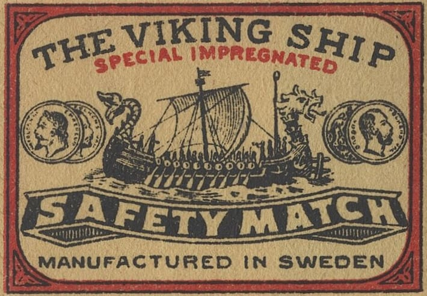
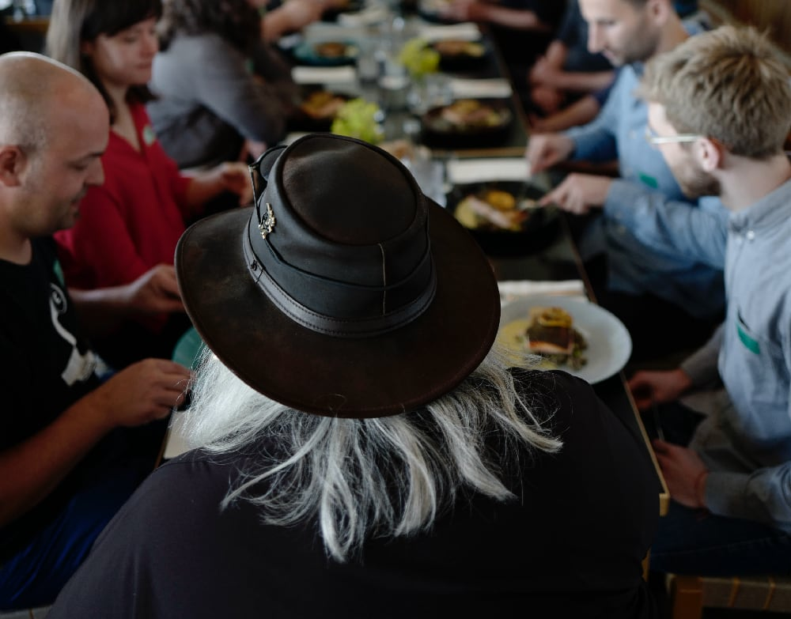

02026Q1 REYKJAVIK: We've just passed through the shortest day of the year and continue to gain a few seconds of sunlight each day.
Status Update
We focus on building prototypes. Teams come to us with an idea and we build the minimum viable product so they can gather feedback and secure funding.
In 02024, we worked closely with Calvis to build the web app, API and iOS app while they coördinated the business strategy and fundraising. At the start of 02025, they raised money to build out their internal team, freeing us up to move on to the next project.
Throughout 02025, we worked with two more companies to build prototypes. They're almost at the funding stage and we're winding down.
02026 has just started, but we're excited about the next round of projects that are in store. We have some VR, museum, cinema and potential retail projects in the works. It's going to be an exciting year.
Tomatoes
In 02025, UNESCO added Italian cuisine as an Intangible Cultural Heritage, joining French (02010), Mexican (02010), Japanese (02013) and Korean (02024) cuisine.
Since Marinara sauce is inextricably connected with Italian cooking, we tend to forget that the tomato is a vegetable from the Americas and didn't appear in Italian (or European) cuisine until the late 01600s.
The first Italian cookbook to include tomato sauce, Lo Scalco alla Moderna (The Modern Steward), was published in two volumes in 01692 and 01694.
Q4 Writing
In Q4, we published 6 articles, 7 weeknotes and maintained our ◍ Quarternotes newsletter schedule.
Playfair Pies
https://optional.is/required/2025/12/18/playfair-pies/
⸻
Black and White + 1 = Full Color
https://optional.is/required/2025/12/05/black-and-white-1-full-color/
⸻
Willy Wonka Candy
https://optional.is/required/2025/11/21/willy-wonka-candy/
⸻
LEGO Wreath
https://optional.is/required/2025/11/06/lego-wreath/
⸻
Time for Timezones
https://optional.is/required/2025/10/24/time-for-timezones/
⸻
Eh, Aye!
https://optional.is/required/2025/10/09/eh-aye/
⸻
📰 optional.is/newsletter/
🗓 optional.is/required/category/weeknotes
📡 optional.is/feeds/
Philuminists

The modern-day safety match we all know was invented in Sweden. Johan Edvard and his brother Carl Frans Lundström started manufacturing safety matches in 01853 at their new factory in Jönköping.
Once they made the matches, they needed something to put them in and the modern-day matchbox with an inside box and outer sleeve was born.
40 years later, in 01892, the factory was completely automated. In 01853, 4,000 boxes of matches were produced a year. By 01896, it was more than seven million! This is why, in many languages, safety matches are called "Swedish matches".
iii];彡 Goddur

Sadly, this new year we lost Goddur. He was the opinionated, giant presence in the Icelandic Art and Design community. we didn't interact with him much directly, but he was certainly in our orbit. He taught many of our colleagues and weighed in on plenty of topics in the media.
Back in 02017, he was gracious enough to present at our Material Conference. At the start, you could feel all the tech folks curdling, but by the end, they were converts.
Material Conference 2017: Fine Art Ingredients of the Web - Goddur https://www.youtube.com/watch?v=5f7ZuMOyJhs
Goddur was a student of Deiter Roth's. Goddur was helpful filling in some gaps about Deiter's outlandish ads.
We wrote out those in Paying for Contrast. https://optional.is/required/2020/11/02/paying-for-contrast/
Merch
Print-ready A0 annual wall calendar PDF. An open-source project to download and print at a local print shop yourself. Stay 📦 organized and stay 🤪 sane.
😀📅 Emoji Calendar. This is a free app to count down to the next holiday with simple two-glyph emojis. Available for iOS and Apple Watch.
Red Days: Holiday Countdown. This is a free app to count down to the next public holiday. Available for iOS and Apple Watch.
Prototypes to Products.
(optional.is) have worked with teams since 02011 to realize their ideas. From workshops to prototypes to products, we're there to help. Our experience working with small to enterprise companies brings a unique perspective on what's possible.
Contact us and say hello. 👋🏻